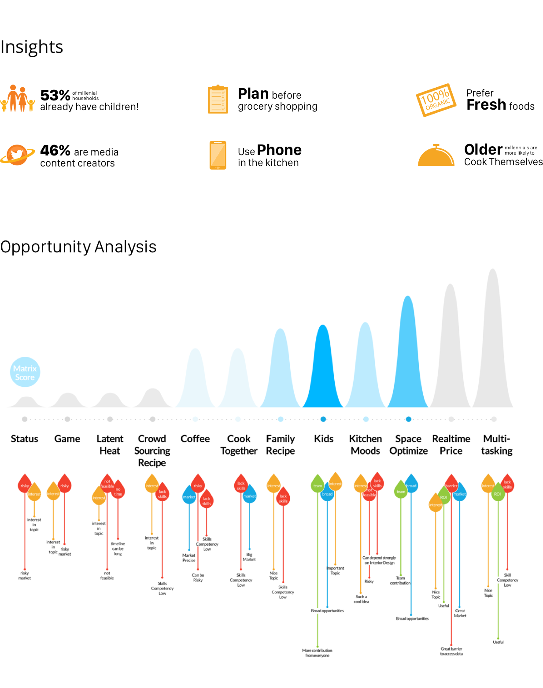
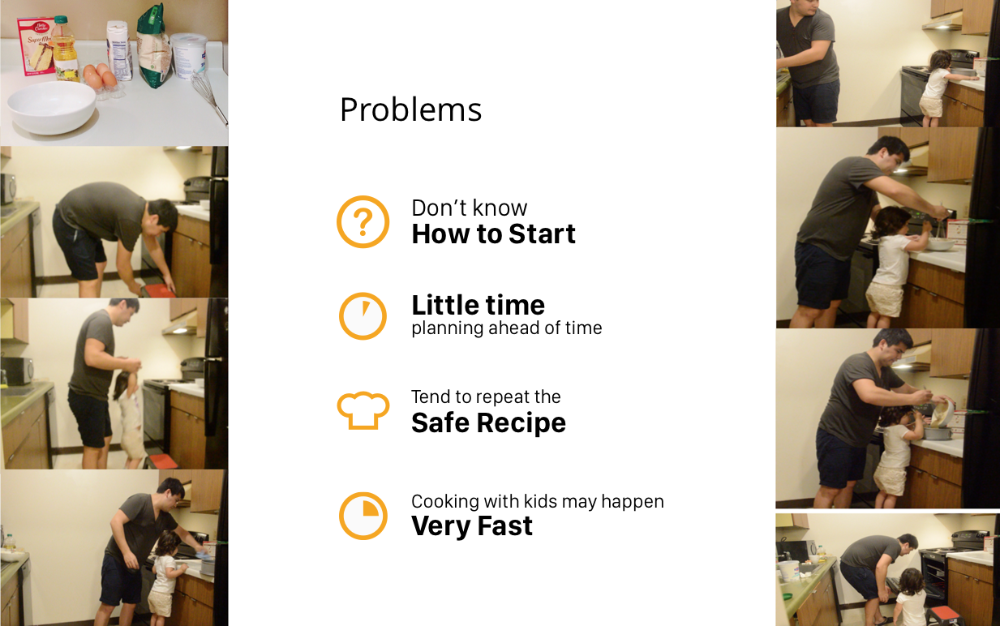
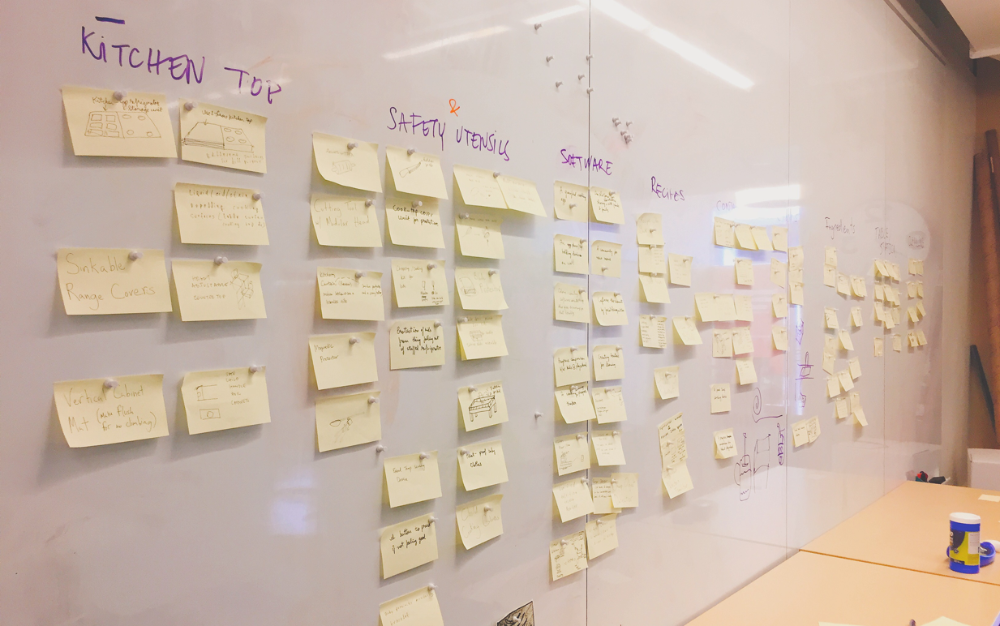
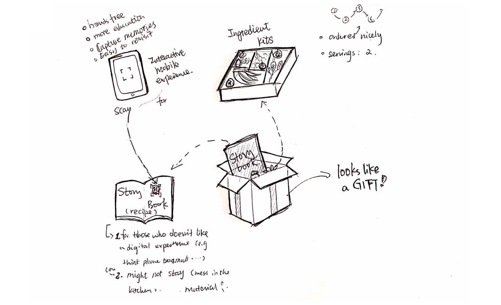
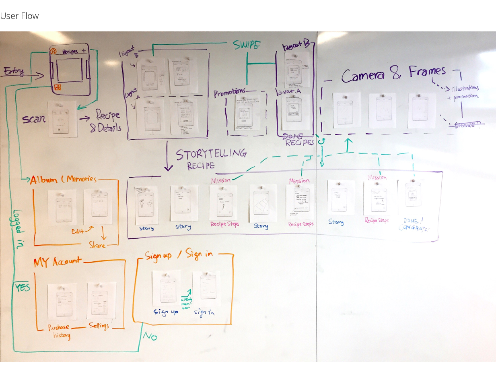

Problem
Millenial parents want to spend quality time in the kitchen with their kids, but they struggle organising an engaging activity while keeping their kids safe.
With 3 engineers and an architect, we designed a recipe kit product, along with an interactive story that guides the family through a memoriable cooking experience.
My Role
UI & UX Designer
Scope
CMU 49-740
Integrated Product Development Methods
We began by conducting general secondary research on millenials. We organised the research into social, economic and technology factors and combined the factors into coherent opportunities/gaps in the current landscape. We evaluated these opportunities using our established criteria. Finally, we landed on the opportunity of introducing kids in the kitchen, because it is a broad opportunity across all the stakeholders and it best matched our team skillset.

We identified three key stakeholders: parents, kids and educators. To understand our stakeholder and the context, we conducted interviews and observations.

We established what do the stakeholders care about in the context of the opportunity. We started brainstorming potential solutions that could fill the opportunity gaps for our stakeholders. We arrived at over 100 ideas and we categorized them into 9 groupings.

Then we eliminated the ones that didn't sufficiently meet the value criteria. We voted out weaker candidates and discussed the remaining ones. Finally we chose the idea of narrative recipe kits.

In order to develop a successful product, we needed to design an integrated product, including the ingredients, the story, the recipe and the mobile application. I started exploring the user flow on paper. This process allowed us to figure out the application hollistically and know which screens to concentrate on for the prototype. Our wireframes focused on one workflow: walk through an engaging story experience and capture memories. We covered recipe preview, story mode and challenge(recipe steps) mode, photo albums and account management.

We will improve the ergonomics and branding of the physical prototype so we can do more detailed user testing with the physical box as well as how it integrate with the application.
I will try to explore the placement of the QR code for the app.
We will explore other recipes.
I will refine the interaction and illustration of the story.